Vegeta
Príncipe Saiyajin orgulloso que lucha por superar sus límites y su propio ego.
Este sitio sirve para que los estudiantes evalúen la integración de HTML, CSS y JavaScript.
Príncipe Saiyajin orgulloso que lucha por superar sus límites y su propio ego.
Cazarrecompensas misteriosa y astuta que oculta su vulnerabilidad tras una actitud confiada.
Líder implacable que busca imponer la paz mediante el sufrimiento para romper el ciclo de odio.
Guerrero islandés que crece rodeado de violencia durante la era vikinga.
Haz click en cualquier "tarjeta" para abrir una vista más grande.
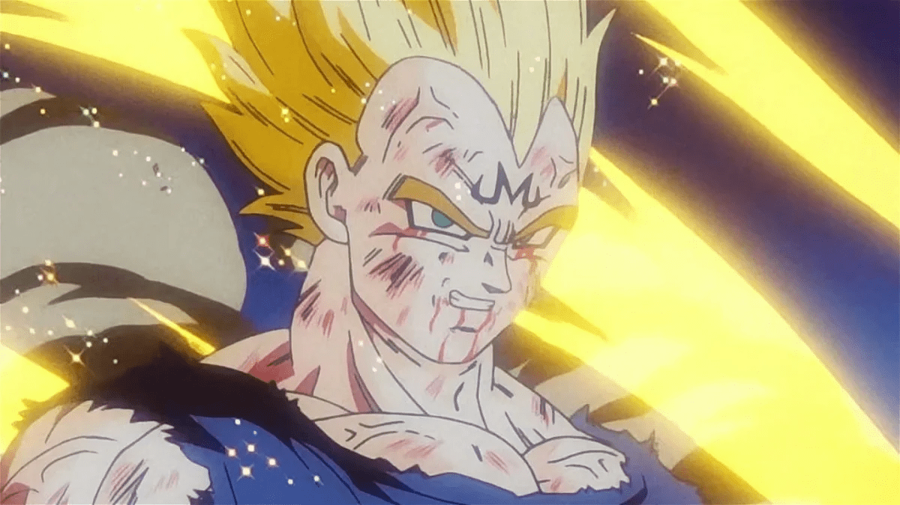
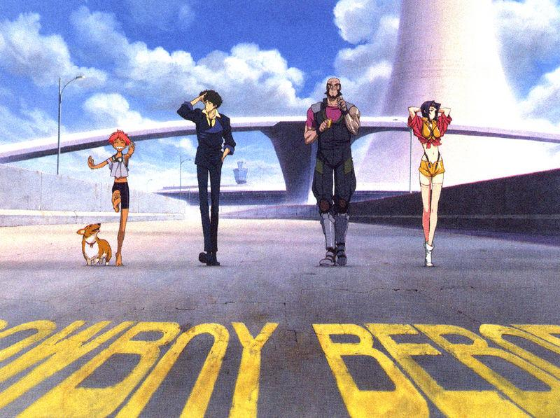
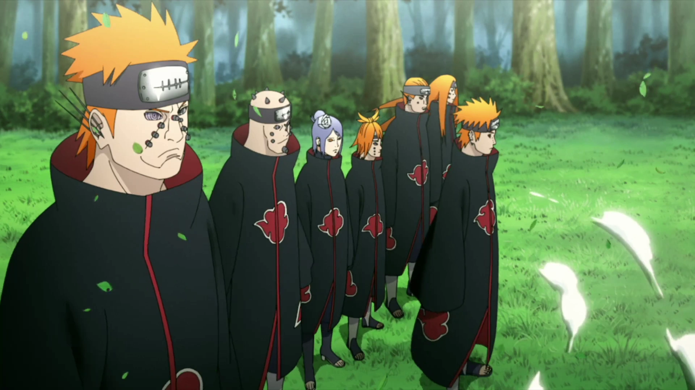
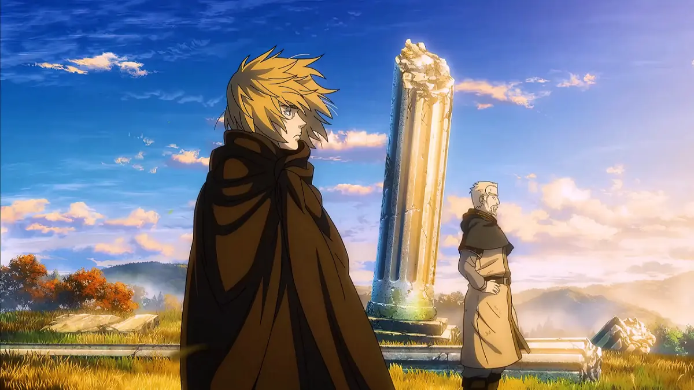
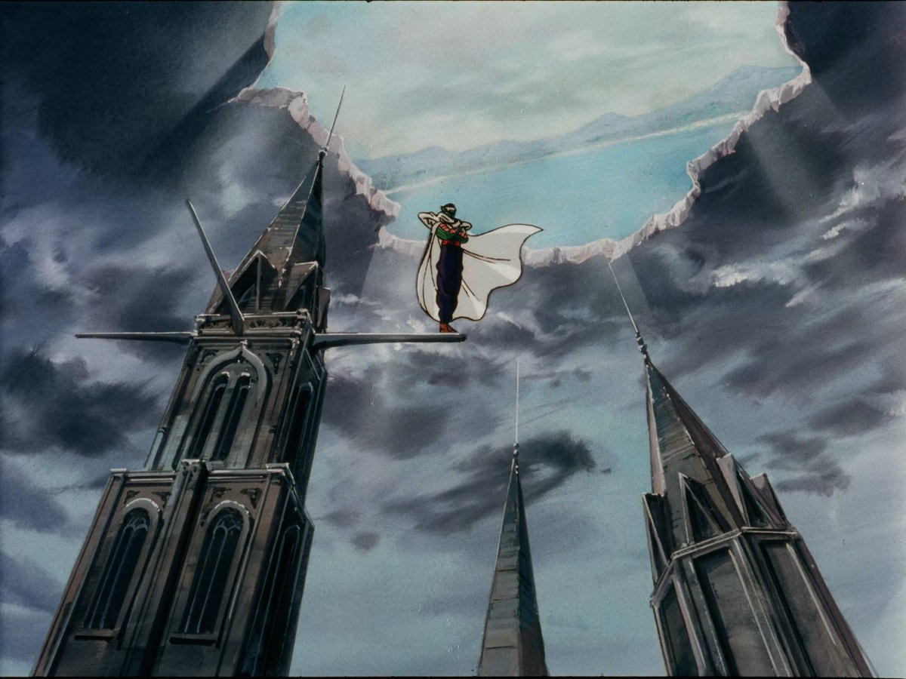
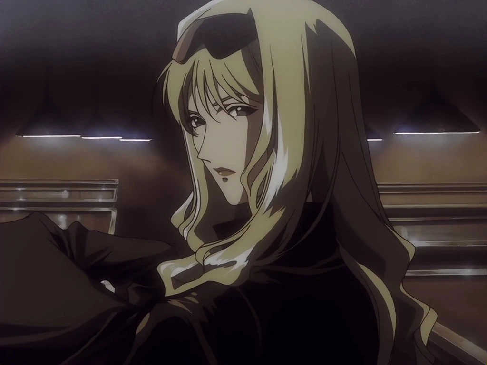
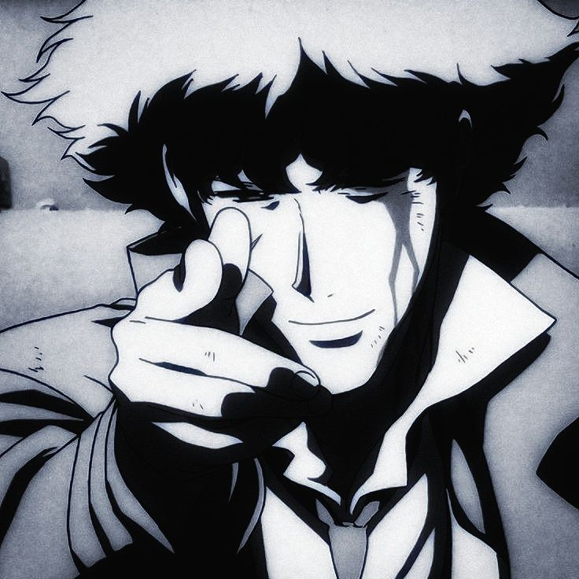

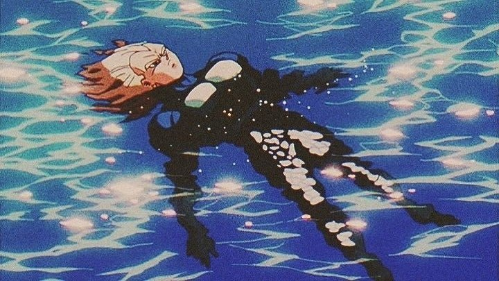
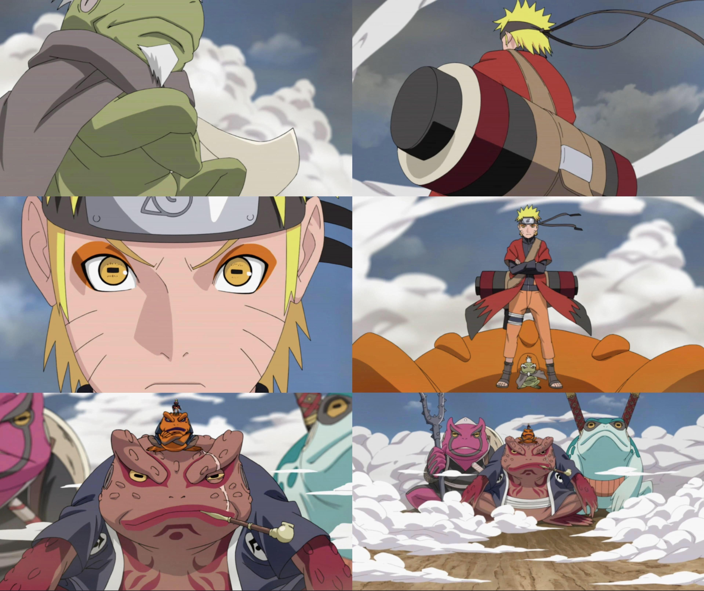
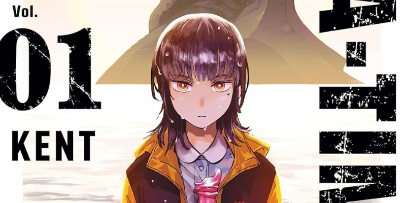
Fecha: 2025-03-10
Este domingo (16), el mangaka KENT anunció a través de X (Twitter) que su obra GAEA-TIMA the Gigantis tendrá proximamente una adaptación al anime, aunque sin ofrecer más detalles referente a su producción.
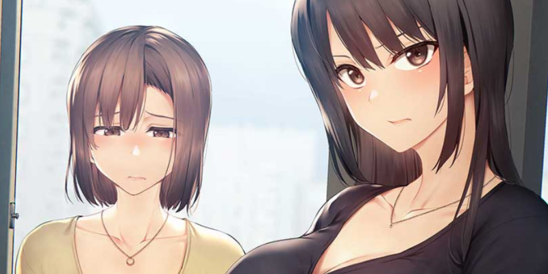
Fecha: 2025-05-22
Tras su lanzamiento en agoto, Irodori Comics SOL presentó recientemente sus proximos lanzamientos de doujinshis traducidos al español latino, lo cuales se complementarán con De tortolitos con una gyaru dulce y los otakus por Sueyuu, ya disponible para su compra desde el 11 de noviembre.
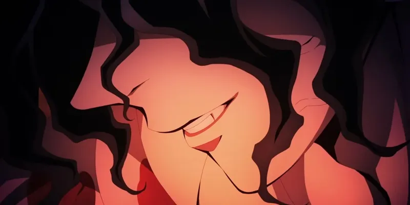
Fecha: 2025-07-01
Como era de esperar, el estreno de Demon Slayer: Castillo infinito en China logró alcanzar una fuerte recaudación en las taquillas del país, impulsando sus cifras totales y consolidando el largometraje como uno de los mayores éxitos del año, según BoxOffice.